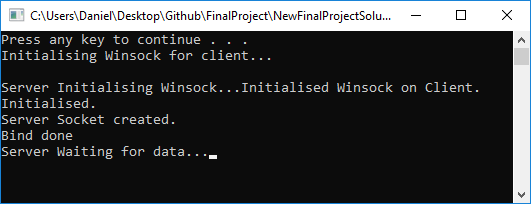

Projects
Monster Miner
|
This was my final year group project at university. A colony simulation/resource management game, inspired by the likes of Dwarf fortress and Rimworld. Written in C# and using the Unity3D engine, players must build a colony and survive in a land where agriculture isn't possible. Gain resources by hunting the dinosaurian wildlife which has adapted to become one with the local landscape and only sees your colony as just another food source. The project includes a random tile generation to make each play through unique and Skills used
|
Global Games Jam 2018

|
I worked as part of a team to create a multi player networked game for the Global Games Jam 2018. The game consists of 2 players moving through a level, where both players can not see all of the platforms. It was an interesting concept to work with, but I believe more could be done with it. Skills used
|
Final Project
|  |
This is my final project for University. The main focus of the project was to research different network configurations to find the most suitable network configuration for multiplayer games. There have been a few draw backs, meaning I had to scrap the work I had done. This set me back a few months, but the project is on track for completion to a decent extent. Skills used
|
Wave Simulation

|
I made this in my spare time using Unity 3D. It is a simple wave simulation using the Sin function. Skills used
|